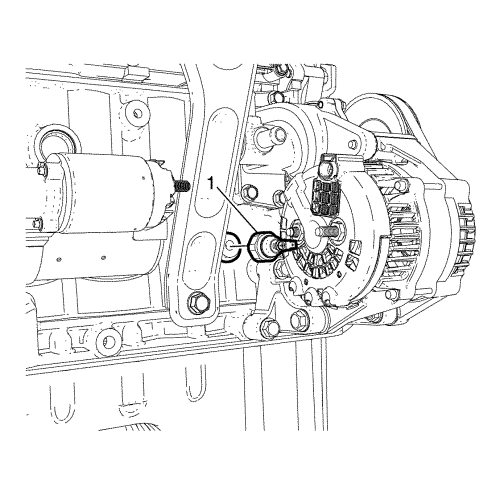
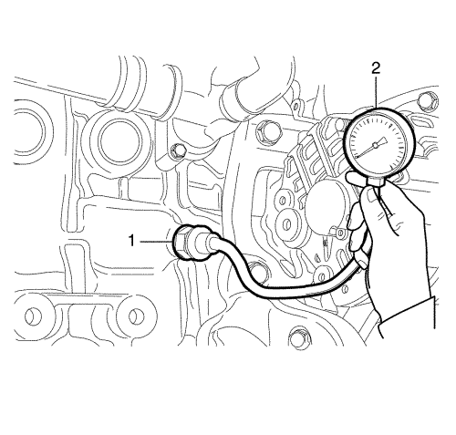

Diagnóstico y comprobación de la presión de aceite
Herramientas especiales
| • | KM-498-B Indicador de presión de aceite |
| • | EN 50170-01 Adaptador de comprobación de la presión del aceite |
| • | EN-50207 Herramienta de desmontaje/montaje del interruptor de presión de aceite |
Si desea informarse sobre herramientas regionales equivalentes, consultar Herramientas especiales
Procedimiento de desmontaje

- Desmonte el interruptor de presión de aceite (1) utilizando la herramienta de desmontaje/montaje del interruptor de presión de aceite EN-50207.
- Limpie la rosca.
Procedimiento de medición

- Monte el adaptador de comprobación de la presión del aceite (1) EN 50170-01 en el manómetro de aceite (2) KM-498-B.
- Monte el adaptador de comprobación de la presión del aceite (1) EN 50170-01 con el manómetro de aceite (2) EN 498-B en el orificio del interruptor de presión de aceite utilizando la herramienta de desmontaje/montaje del interruptor de presión de aceite EN-50207.
- Arranque el motor.
- Compruebe la presión de aceite.
En ralentí, la presión del aceite debe ser de al menos 110 kPa (15,95 psi) y la temperatura del aceite inferior o igual a 120°C (170 °F).
Procedimiento de montaje
- Apague el motor.
- Desmonte el adaptador de comprobación de la presión del aceite (1) EN 50170-01 con el manómetro de aceite (2) EN 498-B en el orificio del interruptor de presión de aceite utilizando la herramienta de desmontaje/montaje del interruptor de presión de aceite EN-50207.
Atención: Consulte Atención - fijaciones en la sección Prólogo
- Monte el interruptor de presión de aceite y apriételo a 18 N·m (13 lib. pie).
- Compruebe el nivel de aceite del motor.
| © Copyright Chevrolet Europe. All rights reserved |